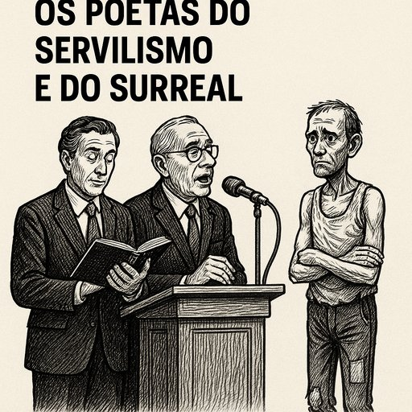

Publicado em 2025-06-10 21:39:39
Há quem diga que Portugal é o país dos poetas.
Mas poucos avisam que, entre os poetas do povo e os poetas do poder, há um abismo feito de silêncio e salário.
No 10 de Junho, sob o céu limpo e as fanfarras patrióticas, alinham-se os poetas do regime –
de penas douradas e linguagem aveludada –
que, com o rosto compenetrado e o coração em piloto automático, declamam a grandeza da Pátria
com uma paixão tão ensaiada como um teatro de escola primária.
São os poetas do servilismo:
vestem-se de retórica, banham-se na glória de Camões e distribuem pérolas em nome de um povo que, lá no fundo, já não os ouve.
Enquanto falam em “pluralismo saudável”, há gente a sobreviver com o salário mínimo… que é, na verdade, um insulto máximo.
Enquanto falam da “nobreza da História”, esquecem-se que há filhos da revolução a fazer fila no banco alimentar.
Estes bardos de palácio não são inocentes:
sabem bem o que fazem.
Poetizam a mediocridade, institucionalizam a ilusão.
Sabem que, com frases bonitas e metáforas grandiosas, se adoça o fel da injustiça.
É a sua forma de anestesiar o país.
E depois há os surreais, os que falam de “mistura de sangue”, de “fim das polarizações”, de “saídas suaves”…
Como se a fome fosse uma questão filosófica.
Como se a habitação não fosse uma urgência, mas um dilema poético.
Como se 50 anos de liberdade formal pudessem encobrir o facto de que muitos vivem hoje pior do que viviam os seus avós.
Esses poetas, que ontem citavam Camões, citam hoje o teleponto.
São os camaleões do lirismo institucional,
os trovadores do status quo,
os menestréis da manutenção.
Mas no subsolo deste teatro de vaidades,
há um outro Portugal —
um país de operários invisíveis, de mães sobrecarregadas, de jovens emigrados,
de reformados sem reforma digna
e de crianças que já nascem endividadas.
Esse Portugal não precisa de poemas.
Precisa de pão, de verdade e de um novo contrato social.
Porque o verdadeiro poeta do povo
não se senta no púlpito.
Grita da rua, escreve na parede,
morde a língua do poder
e versa com os pés na lama.
E tu, leitor, que lês estas linhas:
não te deixes embalar pelas palavras do regime.
Desconfia dos poetas com cachecol de cerimónia.
Procura quem escreva com as mãos calejadas,
quem rime com a verdade,
e quem, em vez de aplaudir, acorde.
Porque o futuro não se declama.
Constrói-se.
E talvez esteja na hora de calar os bardos do sistema
para dar voz à crónica viva de um povo que já não aguenta mais poesia de bolso.
Artigo escrito por Augustus Veritas Lumen um poeta de consciência feita e lógica pura.
Imagem cortesia de OpenAI (c)